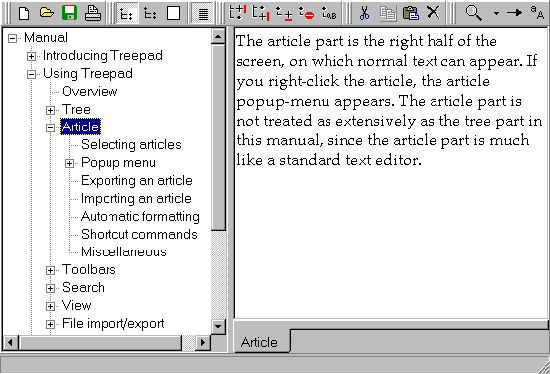
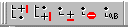
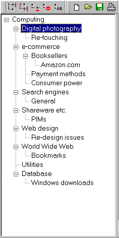

TreePad - a really simple Personal Information Manager. Version 2.6.8 Amsterdam: HJH Software, 1998. [Available from: http://www.freebyte.com]IntroductionThroughout my 'career' as a reviewer of software I have always taken the greatest pleasure in programs that do a job simply and well - this is why I still regard WordPerfect 4.2 as the best word-processor of all time, before the bloated beasts we now have to use took the stage. I still use a package called Almanac, which is a highly intuitive calendar program; sadly, no longer maintained, I think - at least when I tried to register it some years ago, my card was returned with the words, "Gone Away", or some such, on it. In the HTML field, HTMLEd held my affections for a long time, and I still use it from time to time for quick amendments or corrections to pages. For me, the thing that links these diverse packages is that they are easy to use - they set very clear limitations for themselves, do not try to be all things to all people, and deliver what they intend in a very user-friendly (i.e., easy) fashion. Basic featuresTreePad is very simple to describe: as Figure 1 shows, the screen is divided into two panes - on the left is the tree, a hierarchical structure of nodes and subnotes to which are attached the 'articles' on the right-side pane. The Figure shows the tree for the manual, with one of the nodes expanded to show all of the sub-nodes, and one of the sub-nodes is highlighted with the article for that node in the right-hand pane. And that is it! Hard as it may be to believe, that is all that TreePad does, but the important thing is that an 'article' may be absolutely anything - downloaded files, e-mail messages, notes to yourself, whatever, so your use of the package is limited only by your imagination. 
Figure 1: Screen shot of TreePad
Using TreePadJust as TreePad is easy to describe, so is it easy to use. Start a new file by clicking on File/New and you are prompted for a title for the Tree by a highlighted box, which is the first node. Right click on this node and you have a pop-up menu, with an Insert Node sub-menu - click on Child and a sub-node is born (the same effect is achieved by pressing the Insert key). To enter text for that node, click on the empty right-hand pane and start typing. If you are typing something extensive you now get rid of the Tree pane by clicking on the toolbar at the top of the screen - or by hitting F12, if you prefer the keyboard (often faster!). Clicking on another icon, or hitting F10 brings back both. Or, if you are working on a complex tree, as a result of inputting a lot of information, you can get rid of the Article pane by hitting F11 - or another icon. Organizing the structure of the tree is also made easy by another toolbar, with keyboard shortcuts. This enables you to insert a node before or after the current node, add a child node to a current node, delete a node (be careful, because this will get rid of the sub-nodes and associated articles also!), and sort the nodes alphabetically by the name of the node. The sort routine may be applied to the whole tree or to the nodes within any sub-node. 
Figure 2: Tree organizer tool-bar
There is also good search routine for finding text in the tree - enter text in the box and press the search icon (Ctrl. F) and, for subsequent searches, the right-pointing arrow icon or F3. Another icon controls case sensitivity. HyperlinksTreePad has currently implemented hyperlink references to other nodes in the same Tree and to external files on the same system. Hyperlinking to URLs is promised in a future version. The links for the nodes take the form: "node://MANUAL/Introducing Treepad" and you jump to the node and the article by ensuring that the cursor is in the body of the link and then pressing ctrl-H or by using the Article pop-up menu and clicking on Go To... Hyperlink. Links to files elsewhere on the system take the form, "file://<file path>", e.g., "file://c:\Journal papers\vinepapr.doc". This one worked for me, but when I attempted to point to an EndNote file, it didn't, presumably because the system was not set up to launch EndNote when .enl files were the links. The author says: Future link formats will internally look like this: <a href="node://node path">Link to this node</a>, and the user will only see the underlined text 'Link to this node' in his article area. ust like in HTML. ApplicationsIt is pretty obvious from the last section that one of the possible uses of TreePad is as an outliner and it will come as no surprise to learn that this Review was written using TreePad in this way - exporting it as an HTML file (the alternative is a text file) and importing it into HomeSite for final editing. The convention adopted for exporting as HTML is to define the tree as a Description List (DL), with each node a DT item (further defined as headings with H2, H4, etc. tags), and each article as a DD item. If you are happy with this, you can publish the file directly. If not, you'll need to engage in some search and replace and/or additional editing - you could do a lot simply by developing a style-sheet (see the review of Teague at this site) so that the headings and DD items take a style you prefer.
In other words: note-taker, address book, diary and calendar, simple database, etc., etc. No doubt everyone who uses the program finds some highly specific use relevant to their own work or interests. For example, I have started using it to store items from e-mail newsletters on a couple of subjects - here in Figure 3 is the Tree for one of them. 
Figure 3: Computing topics Tree
More to comeGiven that the version is now version 2.6.8, it is evident that Henk Hagedoorn is no slouch at developing improvements in the package, and he promises that future versions will have:
The good news!I think that this is a program that I shall use again and again - it is now in version 2.6.8 and I guess that the author gets enough feedback from users to keep him improving the program. I would like to see the possibility, for example, of having multiple trees in memory at the same time, indicated by tags at the bottom of the Article pane, as some other packages do. Professor Tom Wilson |